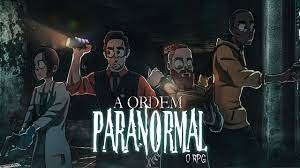

Ordem Paranormal: iniciação

Iniciação é minha temporada favorita, mesmo eu gostando dela, eu concordo que tem varios erros, muitos delas são, interpretação dos playes, o episodios são enormes, a mecanica simplista e bem diferente( o personagem morria de sanidade ou vida por -12).Mesmo assim eu amo essa temporada, a historia é boa e consegue carrega a 1 temporada inteira, sendo assim é minha favorita
Personagens:
- Daniel hartmann
- Elizabeth webber
- Thiago fritz
- Alexsander